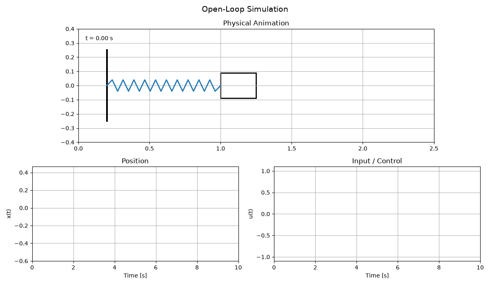
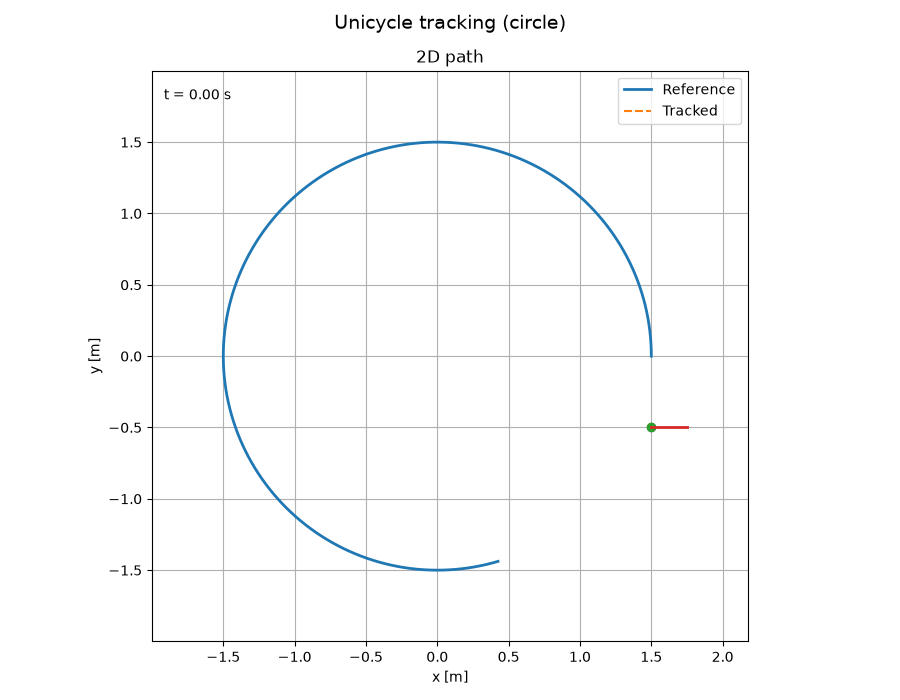
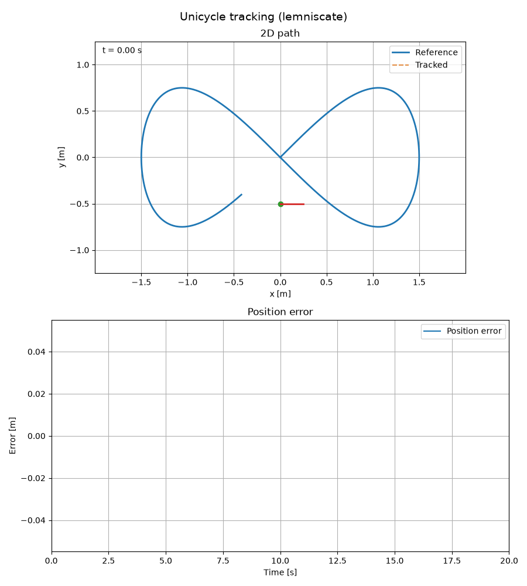

Udit Ekansh
Udit Ekansh
Udit Ekansh
Udit Ekansh
PythonSystemID is an open-source Python library for system identification, model validation, and closed-loop control of dynamical systems. It provides a modular framework to experiment with identification methods, validate models through both prediction accuracy and control performance, and generate publication-quality animations.
The project is built around a core insight: model quality should be evaluated using prediction performance + control performance, not just parameter accuracy. A model with biased parameters may still achieve excellent closed-loop tracking if the bias is consistent across the operating region.
Mass-Spring-Damper (MSD) — A continuous-time second-order system identified using least-squares regression and ARX models, with PID control for closed-loop tracking.
Kinematic Unicycle — A nonlinear mobile robot model identified using linear, grey-box (parametric), and black-box (feature-based ridge regression) methods, with Lyapunov-based path tracking control.

Open-loop response of the MSD system under pseudo-random binary sequence (PRBS) excitation.

Free-run rollout comparing the true system against the identified model. Near-perfect tracking validates the identification.
PID controller tracking a step reference on both the true plant and the identified model.

Lyapunov-based controller tracking a circular reference path.

Lyapunov-based controller tracking a figure-eight (lemniscate) reference path.
The full source code is available here.